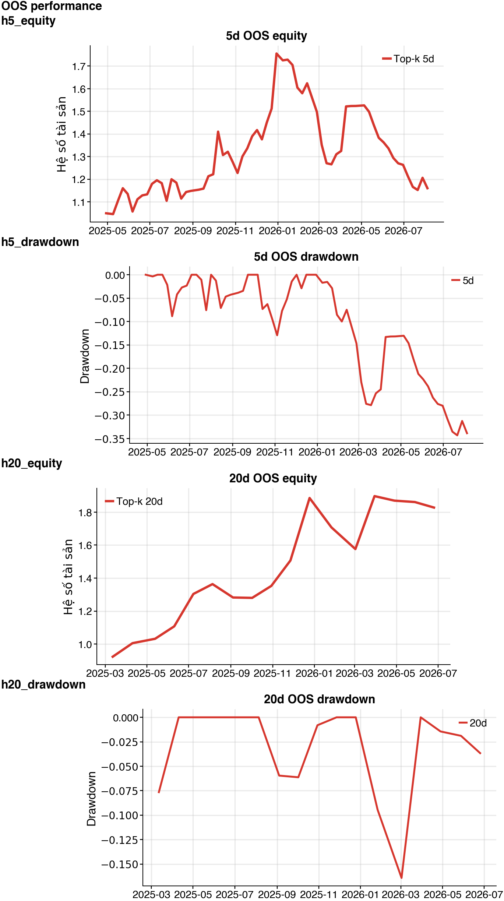

5 phiênNO_EDGERank IC -0.007 · HAC t -0.21 · Net 16.05% · Sharpe 0.50
20 phiênNO_EDGERank IC 0.036 · HAC t 0.79 · Net 82.74% · Sharpe 1.42
OOS performance

Ranking 5 phiên
Guard fail: positive_rank_ic, rank_ic_hac_significance
| Rank | Mã | Dự báo excess return | Percentile |
|---|---|---|---|
| 1 | GAS | 0.44% | 100.00% |
| 2 | VCB | 0.40% | 91.67% |
| 3 | FPT | 0.39% | 83.33% |
| 4 | VHM | 0.25% | 75.00% |
| 5 | HCM | 0.21% | 66.67% |
| 6 | MBB | 0.21% | 58.33% |
| 7 | SSI | 0.15% | 50.00% |
| 8 | MWG | 0.15% | 41.67% |
| 9 | VNM | 0.14% | 33.33% |
| 10 | TCB | 0.11% | 25.00% |
Kết quả theo market regime
| Regime | Net return | Sharpe | Rank IC |
|---|---|---|---|
| bear | 1.42% | 0.34 | -0.112 |
| bull | -13.16% | -0.77 | 0.024 |
| sideways | 31.77% | 1.47 | 0.012 |
Ranking 20 phiên
Guard fail: rank_ic_hac_significance
| Rank | Mã | Dự báo excess return | Percentile |
|---|---|---|---|
| 1 | GAS | 1.63% | 100.00% |
| 2 | MWG | 1.30% | 91.67% |
| 3 | SSI | 1.16% | 83.33% |
| 4 | FPT | 1.13% | 70.83% |
| 5 | VCB | 1.13% | 70.83% |
| 6 | TCB | 0.89% | 58.33% |
| 7 | VHM | 0.78% | 50.00% |
| 8 | VNM | 0.75% | 41.67% |
| 9 | HCM | 0.68% | 33.33% |
| 10 | MBB | 0.55% | 25.00% |
Kết quả theo market regime
| Regime | Net return | Sharpe | Rank IC |
|---|---|---|---|
| bear | 31.08% | 6.40 | 0.074 |
| bull | 22.55% | 0.91 | -0.010 |
| sideways | 13.77% | 1.12 | 0.071 |
Chỉ dùng cho nghiên cứu. NO_EDGE nghĩa là không đủ bằng chứng OOS sau chi phí. Universe cố định vẫn có survivorship bias; cần universe point-in-time và dữ liệu corporate action đáng tin cậy trước khi dùng ở production.